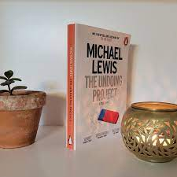
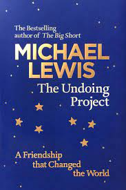

<!---RMIT University Vietnam
  Course: COSC2430 Web Programming
  Semester: 2023
  Assessment: Assignment 1 - Static Website
  Author: Pham Minh Quang
  ID: S3978814
  Acknowledgement: Book Detail Page--->
<!DOCTYPE html>
<html>
<head>
    <title>Book Details Page</title>
    <meta name="viewport" content="width=device-width, initial-scale=1">
</head>
</html>
<meta name="viewport" content="width=device-width, initial-scale=1">
  <link rel="stylesheet" type="text/css" href="booksdetail.css">
  <link rel="stylesheet" href="https://cdn.jsdelivr.net/npm/@fortawesome/fontawesome-free@6.2.1/css/fontawesome.min.css">

</head>
<body>
    <section class="header">
        <nav>
            <a href="index.html">
            </a>
            <div class="nav-links" id="navLinks">
                <i class="fa-solid fa-x" onclick="hideMenu()"></i>
                <ul>
                    <li><a href="index.html">HOME</a></li>
                    <li><a href="best.html">BESTSELLERS</a></li>
                    <li><a href="philoshophy.html">PHILOSOPHY</a></li>
                    <li><a href="neuroscience.html">NEUROSCIENCE</a></li>
                    <li><a href="contact.html">CONTACT</a></li>
                </ul>
                
            </div>
            <i class="fa-solid fa-x" onclick="showMenu()"></i>
        </nav>
        </section>
        <!---JavaScript--->
<script>
            var navLinks = document.getElementById("navLinks");
            function showMenu(){
                navLinks.style.right = "0";
            }
            function hideMenu(){
                navLinks.style.right = "-200px";
            }
</script>
<section class="det">
    <h2><a href="index.html">Home</a> > <a href="best.html">Bestsellers</a> > Civilized to Death</h2>
    <div class="desc">
        <div class="imga">
            
        </div>
        <div class="timg">
            
            
            
            
        </div>
        
       
        
    </div>
    <div class="money">
        <h1>$20</h1>
    </div>
    <button class="button">Purchase</button>
    <h1>The Undoing Project</h1>
    <p>Forty years ago, Israeli psychologists Daniel Kahneman and Amos Tversky wrote a series of breathtakingly original studies undoing our assumptions about the decision-making process. Their papers showed the ways in which the human mind erred, systematically, when forced to make judgments in uncertain situations. Their work created the field of behavioral economics, revolutionized Big Data studies, advanced evidence-based medicine, led to a new approach to government regulation, and made much of Michael Lewis’s own work possible. Kahneman and Tversky are more responsible than anybody for the powerful trend to mistrust human intuition and defer to algorithms.

    </p>
    <p>The Undoing Project is about a compelling collaboration between two men who have the dimensions of great literary figures. They became heroes in the university and on the battlefield―both had important careers in the Israeli military―and their research was deeply linked to their extraordinary life experiences. Amos Tversky was a brilliant, self-confident warrior and extrovert, the center of rapt attention in any room; Kahneman, a fugitive from the Nazis in his childhood, was an introvert whose questing self-doubt was the seedbed of his ideas. They became one of the greatest partnerships in the history of science, working together so closely that they couldn’t remember whose brain originated which ideas, or who should claim credit. They flipped a coin to decide the lead authorship on the first paper they wrote, and simply alternated thereafter.</p>
    <p>This story about the workings of the human mind is explored through the personalities of two fascinating individuals so fundamentally different from each other that they seem unlikely friends or colleagues. In the process they may well have changed, for good, mankind’s view of its own mind.</p><br>
</section>

</body>
<footer>
    <nav>
        
        <div class="footer-nav-links">
    
            <a href="about.html">ABOUT US</a>
            <a href="privacy.html">PRIVACY POLICY</a>
            <a href="terms.html">TERMS OF USE</a>
            <a href="contact.html">CONTACT US</a>
            
        </div>
    </nav>

</footer>
</html>